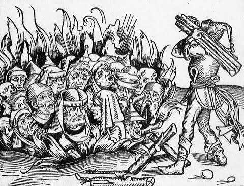
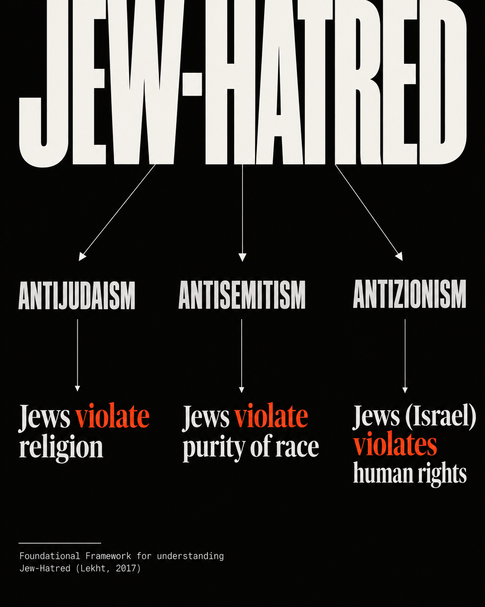

Antijudaism
Religious Jew-Hatred
The Jew as the Enemy of God
European woodcut depicting the burning of Jews following anti-Jewish accusations in medieval Europe.
ENTER ERA IThree Eras. Changing Accusations. One Recurring Pattern.
For more than two thousand years, Jew-hatred has changed its language, accusations, and justifications — but not its target. Explore the three historical eras of Jew-hatred and discover how centuries-old anti-Jewish libels have been reinvented to reflect the dominant moral and ideological beliefs of each age.

Religious Jew-Hatred
The Jew as the Enemy of God
European woodcut depicting the burning of Jews following anti-Jewish accusations in medieval Europe.
ENTER ERA I
Racial Jew-Hatred
The Jew as the Enemy of Racial Purity
European antisemitic caricature from Die Spinne, illustrating the use of anti-Jewish stereotypes in modern antisemitic propaganda.
ENTER ERA II
National Jew-Hatred
The Jewish Collective and State as Enemies of Human Rights
Cold War-era political caricature illustrating the adaptation of anti-Jewish stereotypes to the demonization of Zionism and Israel.
ENTER ERA IIIThe Three Eras of Jew-Hatred is a historical and educational framework developed and taught by Dr. Naya Lekht. It examines how anti-Jewish demonization has evolved through three major forms: religious antijudaism, racial antisemitism, and national antizionism.
Throughout history, Jew-hatred has adapted to society's dominant moral values. Its accusations have evolved, but a recurring mechanism has persisted: portraying Jews as violators of what society considers most sacred.
The accusations change. The language changes. The justification changes. The pattern of demonization remains.

| Historical Era | Target of Demonization | Defining Accusation |
|---|---|---|
| Antijudaism (Religious) | Jews as a religious community | Jews violate religious truth and threaten what society considers sacred. |
| Antisemitism (Racial) | Jews as a racial or hereditary group | Jews threaten racial and national purity. |
| Antizionism (National) | Jewish peoplehood, Zionism, and the Jewish state | The Jewish collective and state are portrayed as violators of human rights. |
These historical forms are not mutually exclusive: religious, racial, and national expressions of Jew-hatred can overlap, coexist, and reinforce one another.
The Jew as the Enemy of God
Antijudaism is hostility toward Jews rooted in religious beliefs and accusations, particularly the portrayal of Jews as enemies of religious truth.
For centuries, anti-Jewish hostility was expressed primarily through religious accusations. In Christian Europe, Jews were portrayed as enemies of God and Christianity, accused of rejecting and killing Christ, desecrating sacred objects, poisoning wells, and murdering Christian children in fabricated blood libels.
These accusations transformed Jews into supposed enemies of the sacred, allowing persecution to be justified as a religious and moral obligation. Anti-Jewish discrimination also existed in parts of the Islamic world under different religious and political conditions.
Defining accusation: Jews violated religious truth, and persecuting them could be portrayed as defending what was sacred.
EXPLORE ANTIJUDAISMThe Jew as the Enemy of Racial Purity
Racial antisemitism portrays Jews as an inherited, alien group allegedly threatening society's racial, cultural, and national integrity.
During the nineteenth century, racial theories, nationalism, and secular ideologies increasingly transformed older anti-Jewish prejudices into racial and political accusations.
The term antisemitism was popularized in 1879 by Wilhelm Marr. Jewish identity was increasingly recast as an inherited characteristic that could not be changed through religious conversion.
These ideas were reinforced through conspiracy theories, racial pseudoscience, and nationalist propaganda, culminating in Nazi ideology and the Holocaust — the systematic murder of six million Jews.
Defining accusation: Jews threatened racial and national purity, and their exclusion or elimination could be portrayed as protecting society.
EXPLORE ANTISEMITISMThe Jewish Collective and State as Enemies of Human Rights
In the Three Eras framework, antizionism is examined as a form of Jew-hatred when historical anti-Jewish libels and patterns of collective demonization are redirected toward Zionism, Jewish national identity, and the State of Israel.
In the twentieth century, older anti-Jewish accusations were increasingly adapted to the language of national liberation, anti-colonialism, racial equality, and human rights.
Antizionist ideas emerged in different political movements before Israel's establishment in 1948 and were later intensified through Soviet propaganda, particularly after 1967.
In its demonizing forms, antizionism portrays Israel and Zionists as embodiments of the world's gravest evils — racism, colonialism, apartheid, Nazism, and genocide. The framework distinguishes this demonization from criticism of specific Israeli government policies.
Defining accusation: The Jewish collective and its state violate humanity's highest moral ideals, and hostility toward them is portrayed as defending human rights.
EXPLORE ANTIZIONISMThe Three Eras of Jew-Hatred is an educational framework developed and taught by Dr. Naya Lekht, scholar and educator, examining the historical evolution of anti-Jewish demonization through religious, racial, and national forms.
The framework identifies a recurring historical mechanism: anti-Jewish hostility adapts its accusations to the moral and ideological language of its time.
These eras are not rigid chronological divisions. Religious, racial, and national forms of Jew-hatred can overlap, coexist, and reinforce one another.
The Third Era: Antizionism and the History of Jew-Hatred is a historical and educational exhibition presented by Stop Antizionism, an initiative of Cohesion Partnership.
Through historical archives, primary sources, powerful imagery, multimedia, and testimony, the exhibition explores the evolution of anti-Jewish demonization and examines how historical libels have been transformed and carried into the modern era.
The digital exhibition is available online, with a physical exhibition planned for 2027.
Choose an era to begin your journey through the history of Jew-hatred.
Support the world's first exhibition dedicated to the history of antizionism and help bring this educational initiative to museums, universities, and communities around the world.
Explore the historical documents, archival collections, and scholarly research underlying the exhibition.
VIEW HISTORICAL SOURCES